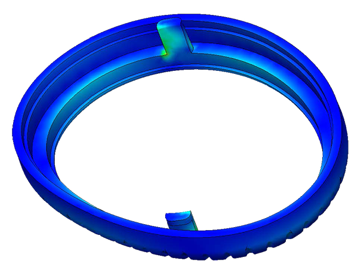
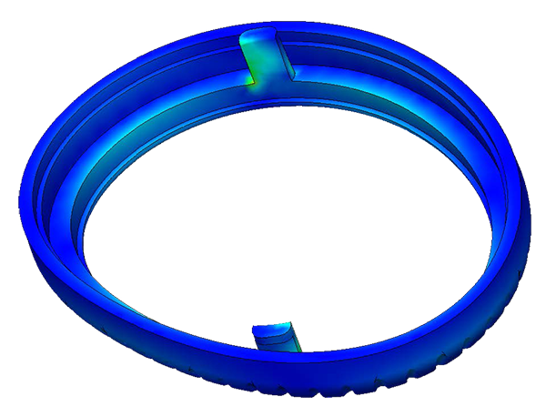

CYCLONE CURLER

OVERVIEW
January - June 2020
Collaborators: Alexandre Berkovic, Brandon Tan, Natasha Cowans
The task of this project was to create a handheld battery powered device for an underserved user group. Our team decided to work with visually impaired users, and through interviews and discussion decided to create a hair styling product that would tackle the issues encountered by our users.
My role in the team was to design the overall product, identify the technical requirements and viable component to use, create half of the model in CAD, create simulations for testing and rendering product photos and videos using Keyshot.
ADAPTING TO THE USER BASE
Through research into both the habits of visually impaired users and the user interaction with traditional hair curlers, some key issues and insights became apparent. The main issues of available products are the risk of burns due to the exposed heated rod, the risk of tangling with motorised curlers, lack of feedback before, during and after use, finally the overall expensive nature of products specifically designed for “disabled” users. The major insights obtained through research were the importance of sensory clues for visually impaired users (haptic, audio but also visual as most visually impaired users can still distinguish flashing lights), as well as the potential for new products in the hair styling market due to the overall negative appeal of traditional curling irons.
INNOVATIVE APPROACH
To tackle the issue of safety for the users, it was decided that heated rods and mechanical elements should be avoided. An alternative commonly used in the hair styling world is heated air. The Cyclone Curler is inspired by Cyclone Separators and uses the same principal to guide the hair around a shaping rod using a vortex contained in a cavity. Through testing using a 3D printed prototype attached to a hair dryer, this idea was confirmed to be viable.
DIGITAL TESTING
To successfully create a vortex that would guide the hair downwards in the device, multiple iterations of CAD designs were created. With every iteration a Flow Simulation was done to see the influence of multiple parameters, ranging from the diameter of the inner tube, to the angle of the exit tube. Through these simulations, an optimal design was obtained to reduce the escaping air at the top while ensuring a powerful enough vortex. Heat transfer simulations were done to determine the necessary protections to keep the handle’s surface temperature cool enough for extended use. Finally, fatigue simulations of the components that would be subjected to repeated stress was done as well as a vibration analysis. This final simulation ensured that the casing’s natural frequency did not match the motor’s to avoid resonance. It is interesting to note that its natural frequency did not match any of the natural frequencies of the different joints in the hand-arm system (see paper), ensuring that vibrations would not have a detrimental impact on the user experience.

 

PRODUCT DETAIL
10L of air are sucked in from the bottom by a centrifugal pump every second and is guided into the handle by the volute chamber. A brushless DC motor rotates the impeller at a rate de 8,000 RPM to obtain this flow. In the handle is a 422W nichrome-mica heating element encased in an acrylic shell, which heats up the air up to 65°C. The acrylic shell reduces the loss of heat to the handle and ensures safe extended use. The air then goes through an airflow separator which can change the direction of the air depending on the chosen setting. Finally, the air is guided at a 12° downward slant into the main tube, where it creates a vortex guiding the hair. As the product was destined to be both portable and battery powered, energy use was a crucial issue and a balance of battery capacity and weight was obtained using multiple 26650 batteries. This delivers a half hour of battery life, which was determined to be enough for every user interviewed.

DESIGN FOR MANUFACTURING AND ASSEMBLY

When the selection of all the internal components was finalized, the design of the casing of the product was created. As the product was destined for mass production, it was essential to design components that could be injection moulded and assembled the most efficiently possible. To ensure a strong and rigid casing, ribs were added. These ribs were also designed to hold in in place both the internal tubing and the assembled heating element. Bosses and gussets were added for the screws that hold the casing halves together. Components designed to be opened by the users used snap-fits or locking mechanisms.
We designed our PCB to control the different light cues, sounds and heat settings and provide the necessary voltage to the different components of the product. Additionally, the board handled the charging of the li-ion batteries from the charging base. Designing our PCB allowed us to reduce the size of premade boards by adding only the required elements.

SENSORY CUES
To ensure ease of use for the user, several elements have been implemented. Firstly, the integration of a vocal assistant relying on the Alexa API and the creation of personalized hooks. This adds an extra layer of security for the user to ensure the product is turned off and can monitor usage. Secondly, to make use of the crucial residual sight of the visually impaired users, an LED ring at the bottom indicates the direction of the air flow, while an LED button helps the user easily find it. Finally, a piezoelectric speaker gives the user timing cues to ensure the hair is not burned due to a prolonged exposure to the heated air.


A requirement of this project was to identify a brand that could offer this product among their range of products and design in to fit. Our team decided to choose Panasonic due to their connection to the hair care market as well as their technologically innovative product line. This project was not affiliated, associated, authorized, endorsed by, or in any way officially connected with Panasonic. The name Panasonic as well as related names, marks, emblems and images are registered trademarks of their respective owners.
Video edited by Alexandre Berkovic, renders done by me using Keyshot.